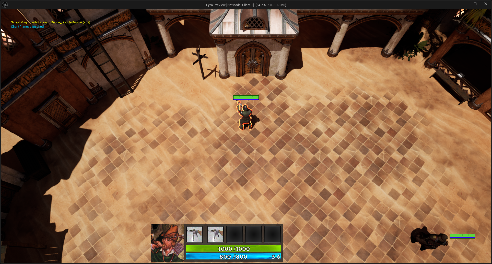

Jeu multijoueur · MOBA
En développement
DabelGame
Apprendre en construisant.
Faire évoluer dans la durée.
Mon projet personnel de MOBA, un jeu d’arène multijoueur, développé à partir du socle Lyra sous Unreal Engine 5.
Découvrir la démarche- Socle
- Unreal Engine 5 · Lyra
- Développement
- C++ · Blueprint
- Architecture
- Client-serveur

01 La démarche
Comprendre un socle.
En faire un projet.
Au début de DabelGame, j’ai appris le fonctionnement d’Unreal Engine et de son multijoueur. Le projet s’appuie sur Lyra, le projet d’exemple d’Epic Games, dont je fais évoluer les fonctionnalités vers mon propre jeu.
Mon travail porte sur le développement et l’intégration de ces fonctionnalités dans l’architecture d’Unreal : comprendre les systèmes existants, relier le code et les assets Blueprint, puis accompagner l’évolution du projet.
-
Comprendre
Prendre en main Unreal et Lyra, leurs conventions et le fonctionnement d’un jeu en réseau.
-
Intégrer
Faire coopérer logique C++ et Blueprint, données de jeu et assets dans le même ensemble.
-
Faire évoluer
Adapter le projet au fil des besoins, en gardant des responsabilités explicites entre les systèmes.
02 L’architecture en pratique
Un état de jeu partagé.
Des rôles bien définis.
Le multijoueur impose de distinguer ce que le joueur voit de ce que le serveur décide. DabelGame met en œuvre cette séparation à travers l’autorité serveur et la réplication de l’état du jeu.
-
01 / Intention
Client joueur
Reçoit les commandes du joueur et demande une action.
-
03 / Synchronisation
Clients
Reçoivent l’état répliqué et actualisent la présentation du jeu.
Les effets visuels peuvent être anticipés localement, puis réconciliés avec le serveur. Cette prédiction de présentation ne décide ni des dégâts, ni des coûts, ni des délais de récupération.
Deux choix concrets du projet
- C++ & Blueprint
- Le projet combine logique C++ et Blueprint, avec des données et des références d’assets intégrées à l’architecture d’Unreal Engine.
- Logique & présentation
- Le combat conserve une logique autoritaire côté serveur. La prédiction visuelle côté client possède son propre cycle de vie.
03 À propos de l’auteur
Hélio Gaudé
Étudiant en Master 2 Génie logiciel à l’Université de Bordeaux, je recherche un stage de fin d’études.
DabelGame accompagne mon apprentissage du développement logiciel à travers un projet personnel qui évolue dans le temps.